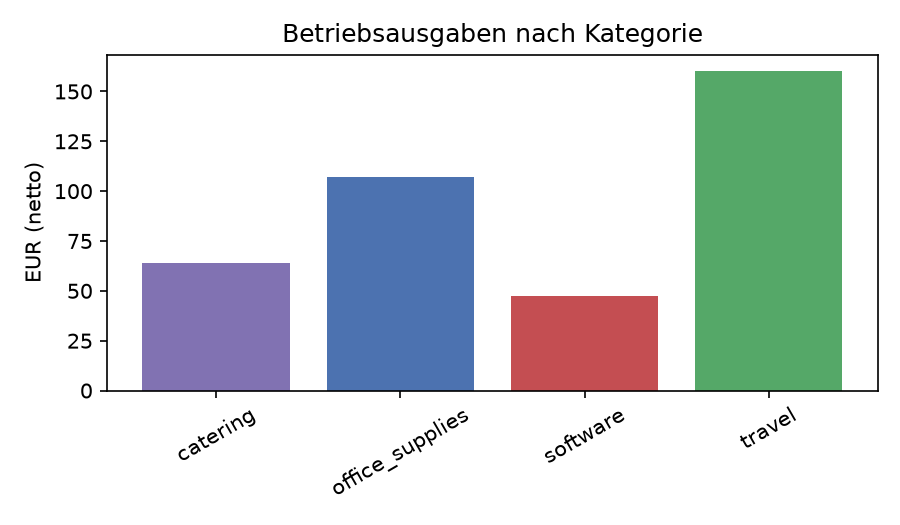

| Datum | Beleg | Betrag |
|---|---|---|
| 15.01.2026 | Rechnung 2026-201 | 1.200,00 € |
| 11.04.2026 | Invoice 2026-202 | 950,00 € |
| 21.08.2026 | Rechnung 2026-203 | 1.500,00 € |
| Summe | 3.650,00 € |
| Kategorie | Betrag |
|---|---|
| office_supplies | 107,10 € |
| travel | 160,50 € |
| software | 47,60 € |
| catering | 64,20 € |
| Summe | 379,40 € |

| Betriebseinnahmen | 3.650,00 € |
| Betriebsausgaben | 379,40 € |
| Jahresüberschuss | 3.270,60 € |
| USt-Zahllast | entfällt (§ 19 UStG) |
Das Geschäftsjahr 2026 schließt mit einem Überschuss von 3.270,60 €. Als Kleinunternehmer nach § 19 UStG wurde auf keiner Ausgangsrechnung Umsatzsteuer ausgewiesen; im Gegenzug entfällt auch der Vorsteuerabzug auf Eingangsrechnungen, weshalb Betriebsausgaben hier in Bruttohöhe ausgewiesen werden. Größter Ausgabenposten war der Bereich Reisekosten (160,50 €), das Gesamtausgabenvolumen blieb insgesamt gering.